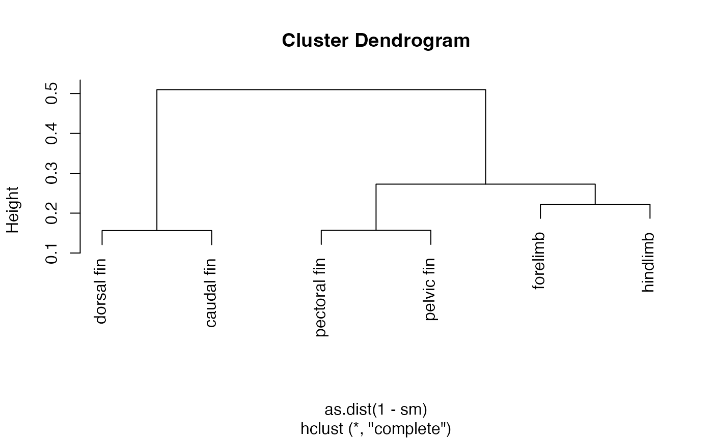

The Tanimoto similarity ST is computed according to the definition for bit vectors (see Jaccard index at Wikipedia). For weights \(W_i \in \{0, 1\}\) it is the same as the Jaccard similarity. The Tanimoto similarity can be computed for any term vectors, but for 1 - ST to be a proper distance metric satisfying the triangle inequality, \(M_{i,j} \in \{0, W_i\}\) must hold.
The Jaccard similarity is computed using the Tanimoto similarity definition for bit vectors (see Jaccard index at Wikipedia). For the results to be a valid Jaccard similarity, weights must be zero and one. If any weights are different, a warning is issued.
The Cosine similarity SC is computed using the Euclidean dot product formula. See Cosine similarity on Wikipedia. The metric is valid for any term vectors (columns of the subsumer matrix), i.e., \(M_{i,j} \in \{0, W_i\}\) is not required. Note that 1 - SC is not a proper distance metric, because it violates the triangle inequality. First convert to angle to obtain a distance metric.
The Resnik similarity between two terms is the information content (IC) of their most informative common ancestor (MICA), which is the common subsumer with the greatest information content.
tanimoto_similarity(subsumer_mat = NA, terms = NULL, ...)
jaccard_similarity(subsumer_mat = NA, terms = NULL, ...)
cosine_similarity(subsumer_mat = NA, terms = NULL, ...)
resnik_similarity(
subsumer_mat = NA,
terms = NULL,
...,
wt = term_freqs,
wt_args = list(),
base = 10
)matrix or data.frame, the vector-encoded matrix M of
subsumers for which \(M_{i,j} = W_i, W_i > 0\) (W = weights),
if class i subsumes term j, and 0 otherwise. A binary
(\(M_{i,j} \in \{0, 1\}\)) encoding (i.e., W[i] = 1)
can be obtained from subsumer_matrix().
character, optionally the list of terms (as IRIs and/or labels) for which to generate a properly encoded subsumer matrix on the fly.
parameters to be passed on to subsumer_matrix()
if a subsumer matrix is to be generated on the fly.
numeric or a function. If numeric, weights for the subsumer terms.
For resnik_similarity, these are expected to be information content (IC)
scores, though any score will work for which a higher value means higher
information content, and where a term will always have a score equal to or
greater than any of its superclasses. If a function, it must accept parameter
x as the vector of term IRIs and return a vector of frequencies (not
IC scores) for the terms. The default is to use function term_freqs().
Subsumer terms with zero or missing (NA) frequency will be omitted from
the calculation.
list, named parameters for the function calculating term
frequencies. Ignored if wt is not a function. For the default wt
function term_freqs(), the main parameters are as and corpus.
integer, the base of the logarithm for calculating information content from term frequency. The default is 10.
A matrix with M[i,j] = similarity of terms i and j.
Philip Resnik (1995). "Using information content to evaluate semantic similarity in a taxonomy". Proceedings of the 14th International Joint Conference on Artificial Intelligence (IJCAI'95). 1: 448–453
sm <- jaccard_similarity(terms = c("pelvic fin", "pectoral fin",
"forelimb", "hindlimb",
"dorsal fin", "caudal fin"),
.colnames = "label")
sm
#> pectoral fin pelvic fin forelimb hindlimb dorsal fin caudal fin
#> pectoral fin 1.0000000 0.8431373 0.8269231 0.7272727 0.5600000 0.5306122
#> pelvic fin 0.8431373 1.0000000 0.7272727 0.8269231 0.5600000 0.5306122
#> forelimb 0.8269231 0.7272727 1.0000000 0.7777778 0.5192308 0.4901961
#> hindlimb 0.7272727 0.8269231 0.7777778 1.0000000 0.5192308 0.4901961
#> dorsal fin 0.5600000 0.5600000 0.5192308 0.5192308 1.0000000 0.8437500
#> caudal fin 0.5306122 0.5306122 0.4901961 0.4901961 0.8437500 1.0000000
# e.g., turn into distance matrix, cluster, and plot
plot(hclust(as.dist(1-sm)))

if (FALSE) {
phens <- get_phenotypes("basihyal bone", taxon = "Cyprinidae")
sm.ic <- resnik_similarity(terms = phens$id,
.colnames = "label", .labels = phens$label,
wt_args = list(as = "phenotype",
corpus = "taxa"))
maxIC <- -log10(1 / corpus_size("taxa"))
# normalize by max IC, turn into distance matrix, cluster, and plot
plot(hclust(as.dist(1-sm.ic/maxIC)))
}